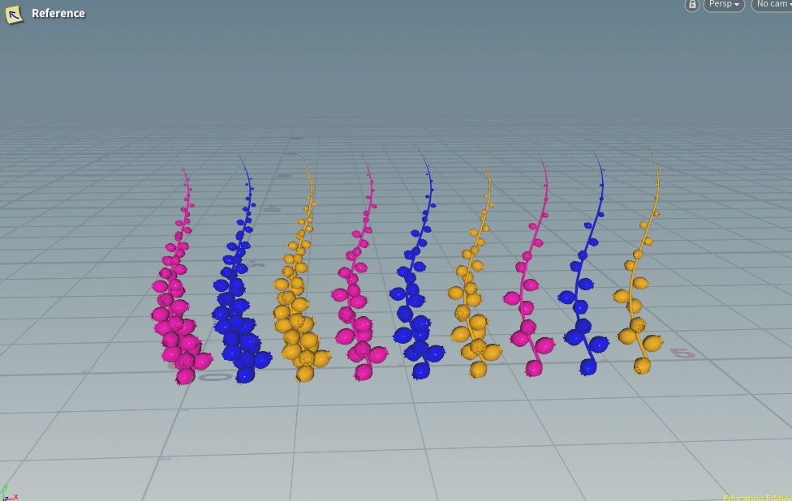
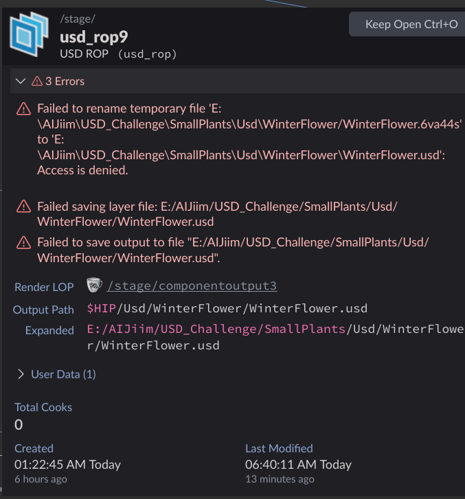
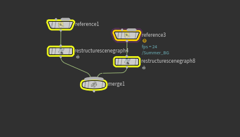

第 3 週
Houdini－Unreal USD 流程
1 月 25 日
已完成：
待辦事項：
-
上週我在 Unreal 中測試了 VAT Instancing
-
在 Houdini 中嘗試不同的 Instancer 方法，並測試在 Unreal 中的效能
-
在 Unreal 中嘗試有動畫的 USD Instancing，但沒有成功
-
搞懂從 Houdini 到 Unreal 的 USD 流程
-
測試有動畫的 USD variants 與 USD 分層流程
靜態網格（Static Mesh）：
我認為在 Unreal 中使用 USD 最大的限制是 Unreal 對變形動畫的支援不太好。USD 特別適合大規模的場景佈局與管理。使用靜態網格能讓我們在填充與佈置場景時更有彈性。
上週我做的是把有動畫的 USD 檔匯入 Unreal，並成功完成分層。
我也測試了 Yichen 的花。這是我在 Houdini 中為 Yichen 的花朵 variants 做的設定。在 Unreal 中可以選擇不同的 variants，如果有多種材質，也可以切換。


我也在 Houdini 中試做了一些材質 variants，這樣在 Unreal 中就能選擇不同的材質。如果幾何體太大，也可以使用 payload。
我也試了 Houdini 的 Layout，可以建立自己的資產庫，並用繪製工具擺放植物。佈局是用參照的資產產生的，所以佈局階段同樣包含並支援資產 variants。

疑難排解
如果要把變形動畫以 USD 檔匯入 Unreal 並使用分層，必須確認這裡開啟了 time samples，否則幾何體不會動。


在 AI Summit 期間，我進一步研究了 USD Variants，輸出 USD 時遇到一些問題。首先，點這裡時無法輸出 USD，一直出現錯誤。


也試著管理場景、切換開關，這對資產或模擬來說更有效率。

-
嘗試 USD variants 和 PDG
-
嘗試套用透明度貼圖